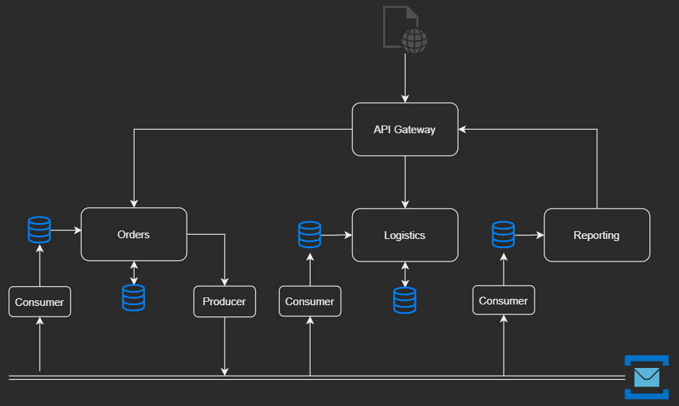
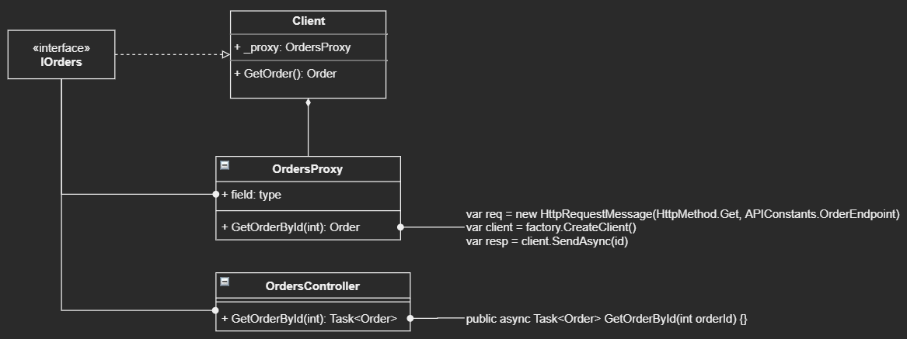

Reality of Engineering
May 18, 2020 - 22 mins read time - 4591 words - garrardkitchen
I gave myself some downtime this weekend. The weather was rubbish so unfortunately I couldn’t execute some “list” tasks. Instead, I watched some movies, helped my boys find stuff, build and generally make a mess - ah, the good stuff yeah?! This gave me the necessary space to think about some of the areas of engineering that would have benefited me from knowing “at the time”. Below is a list of guiding principles, advice and general experience in engineering resulting from this “moment of clarify”. I never know whether to call it engineering or development. Apologies if I switch between the two terms in this post. I essentially mean the same thing. One thing to note, it’s a list with some content. It not exhaustive and they are just my opinions. As always, this is a reminder to myself but hoping this will help others too!
No code is perfect
Put the keyboard down, and walk away….but only after you’ve finished writing the unit tests, yes. Code and requirements change frequently. So, don’t over think your code. Just make sure you adhere to good engineering principles and that your code does exactly what it is required to do, no more. Please don’t add code that isn’t needed. This will become somebody elses nighmare to support and to refactor later!
Now, write tests and move on…after capturing tech debt of course!
Tech debt
Technical Debt is created all of the time. It is what happens when you develop. It shouldn’t been seen as a bad thing, providing it is managed correctly and as well as openly. This is a key point, it must be captured. So, what do you need to capture? Well, this is will give you a good start:
- what needs to be done to deal with it (e.g. re-platform to the cloud)
- why the decision was made to leave it as tech debt (e.g. temp solution to keep up momentum)
- what benefit it will give the organisation when dealt with (e.g. better resilience and CX -
Custer eXperience).
Simples.
No man is an island
Keeping on the theme of Tech Debt; things like this need to be discussed openly. More to the point, the inclusion of tech debt needs to be agreed AND it has to be captured. This approach should be driven by good engineering leadership.
Ideas; thick and fast
To work rapidly towards a solution, ideas need to be thick and fast. These will be dismissed and will help shape the eventual solution. This goes for both architecture and code solutionizing. The quicker the ideas are out there, the quicker these ideas can be critiqued. With these ideas being shared, the discussion that will enevitably ensue will always bring the team members together. Collaboration is your friend. The serendipity of this action will give more team members shared knowledge of this problem domain and will, in part, help in their personal development and education.
Don’t be precious about your codebases
This time next month, 6 months, a year, 2 years, etc.. it won’t look the same and most probably will not exists.
Write tests and move on.
TDD
This approach is always spoken of, especially in interviews or technical tests, but sadly not always adhered too in practice. In my experience, it always, ALWAYS results in succinct, readable and less verbose code. Oh yeah, with tests. Bingo!
Kick towards the end goal
Quick releases will measure your success rate and offer the greatest amount of flexibility to react and adapt. So what do I mean to “react and adapt”. When you are developing a new features, you never, EVER release the all-encompassing, panacea. You devise a MVP (minimum viable product, or feature), to purely test your original hypothesis. This way, if no one needs it OR can’t use it, you can rapidly either (a) chalk it up to experience and move on OR (b) improve the UsereXperience. Ah yes, slow development and big bangs don’t help. Whether it’s a rewrite or a new feature, you won’t know whether you’re on the right track until it’s out there and, here’s the biggy, and being measured! Yeah, I went there! I mean, how else are you going to know whether your feature is working or being used right? This includes re-engineering technical problems too.
If developing features, have the PO provide test-cases
There’s 2 types of development work. These are (a) Technical work which address engineering improvements and (b) Features. As engineers, we know how to test our sh*t, but not necessarily how best to test a new feature. This requires excellent product domain knowledge. So, an important part of the effort is to have your PO (Product Owner) provide the test-cases. This needs to be part of the Sprint.
Let your architecture deal with resilience
A definition of Resilience:
Resilience is the ability for your solution to continue to operate without issue, when faced with a transient failure.
You’ll think you’re doing a good job by including a resilience framework to exponentially backoff or circuit break failed downstream dependencies. Unless this is done properly and is known by all dependents, you’ve creating a huge problem for others! This is one of the reasons I hate HTTP chaining. You are inadvertantly creating something that may cause DDoSing of your own infrastructure…even with a jitter! There are better approaches to mitigate this - EDA.
Offload cross-cutting concerns
This is in keeping with the DRY principle. Heres a list of typical cross-cutting concerns you can achieve through the use of an API Gateway:
- authentication & authorization
- service discovery integration
- response caching
- retry policies, circuit breaker, and QoS (quality of service)
- Rate limiting and throttling
- Load balancing
- Logging, tracing, correlation
- Headers, query strings, and claim transformation
- IP whitelisting
What this gives you is a smaller attack surface areas as well as facade-esque capability to re-utilisize your services. I am not saying that this, or aggregation, are the best solutions, more that they are just solutions that may work for your particular problem domain. This by itself is NOT the entire solution but will help your architecture a better solution.
More recently, a large number of the above cross-cutting concerns can be accomplished using technologies like service meshes (e.g. istio). I digress …
Take authorization for instance. Implementing this repeatedly across all your services is simply a waste of time and effort. The best place to target this, is at the API Gateway. Done once, which means less code, less maintenance and one place to have your X.509 certificate. Imagine what a pain it will be having to redeploy a new X.509 certificate?! Mind you, not so much of a pain if you have your CI/CD pipelines configured!
EDA between domains
If you’ve ever done DDD (domain driven development) or even attempted to group your services whtin bounded contexts, you will still have found you need data from another domain. Think Orders and Logistics. These typically will sit behind different domains. There will be a time that these will need to be request information from one another. What about reporting, especially, executive level summary reporting? Each domain or even bounded context may/will have their own data repositories will will lead to some complicated and drawn out conversations when solutionizing! Let’s bounce back to requesting data. Typically, you’d use a RESTful approach to this or even gRPC - both using HTTP/2. Either way, hopefully you will have configured internal/private HTTP APIs, as need to make this public even if they’re only required by the backend services right? The thing about HTTP traffic is that, it offers a point of failure, notice I’m saying single point of failure….we wouldn’t do anything this silly would we?! For HTTP calls, we’d, again, typically have it wrapped up using some nice resilience framework yes? So, if the first attempt fails, we’d try again immediately then start to expotentially back off right? And for good measure, we’d have a jitter too yes? Well, if you have multiple clients doing this and the is several levels deep, then you could have a real problem on your hands if you have a failure that is is nested pretty deep. All, because a web form or similar is requiring data, causing a ripple affect across all your HTTP services!
A better way to manage this is to have one BFF, that has access to all required to services that one web form request AND does NOT require need to violate cross-boundary calls. EDA (Event Driven Development) offers a solution to this.
What the illustration below articulates is a way to have immediate across to data that is mutated in other domains, negating the need to having to request it each and everytime a web request is made:

The data repositories above, as used by the consumers, are all denormalized, configured specifically for reads instead of writes.
Only take the microservices route if this addresses the issue
… you’re trying to solve!
For everything we do, we need to justify it to someone above, whether they be senior management, stakeholders or even the board. If we don’t, it simiply won’t get done. There’s always some other priority that is more important right?! So, the best way to justify a piece of work, albeit dealing with Tech Debt, is you have it to back it by meaningful metrics. You can’t, and you shouldn’t, deem something worth doing because of your gut…if we build it, they will come kind of thing which is a no-no.
This will help enormously by forcing you to identify the ACTUAL problem you’re trying to solve. Anyone who’s trying to move away from Microservices will atest to the fact that they are not always the way to go. Even if there’s a lot of evidence present to suggest this. Monolithics, I’ve been reading a lot about this reversal recently, in one form or another (single process, modular and distributed) might give you, dependant on your scenario, equal or even more that one the complexities and maintenance overhead that Microservices brings to the game! But, different horses for courses. Just don’t always be swayed by the new shiny. Serverless obviously is the exception to the rule ;O).
All I’m going to say in the section is, always address the ACTUAL problem, and then let the best solution lead the technology choice, not the other way around.
Cross-boundary requests metrics
OMG, how easy is this??!! Next!
There’s no excuse for not knowing how perfomant your solution is, and where fault responsibilities are.
If you are calling across bounded context, notice I didn’t say domains here, or when calling out to external services, you MUST capture latencies and errors rates. I’m not focusing here on the other 2 pillars of observabililty (tracing & logging), although, all 3 pillars are super important.
If you want a positive Customer experience, you must be the first to know about an failure. Alerting will help here. Alerting will tell you when a latency is creeping up or worse, when errors have started to happen. Either way, you need a mechanism to give you the maximum about of time to address an issue if it arises. Most monitoring solutions come with alerts that allow you to notify people/teams. There are even feature that automatically assign the investigation to teams or specific indivuals. Slightly off topic here, but only just, error management is hugely important to your organisation. If used correctly, it can give you instant information, including all logging up to the actual error, even cross boundary in the error happened down stream in another internal service. It pays for itself and takes the guessing out of most of the debugging effort. This used to capture releases if powerful and again can help you pinpoint rapidly reasons for issues.
Document as you go, must not be an afterthought
As we rapidly move from one task to the next, our memory of a prior piece of work will deminish. Along with this will be the bigger picture. I find documenting as you go is super useful. Any not jsut for you, for your organisation. I dreed to think how much time per year is spent on hunting down domain knowledge and reading through line at line of code. Not to mention, inadvertantly implementing something that does adhere to the big picture simply because you were not aware.
What helps for me is, capturing thoughts and possble solutions. This leads to better articulation with your colleagues. It also helps explaain Tech Debt. How often have you had a “Why on earth did they do this?!” moment? One of my sayings is always respect the legacy as, more oftern than that, it was the right thing to do at the time…you weren’t there mannnnn! Everyine can be be scinic after the fact! So, to stop you coming off as an idiot with your colleagues, document you though process, final solution, your rationale and any Tech Debt (see section above).
No initial design will ever play out
I’ve been doing this for years and never has anything ever played out exactly as first envisaged. If anyone tells you different then they have never developed or architected anything, ever, EVER! It’s that simple. This leads on nicely with the next section…
It’s 100% ok to change your mind
It is 100% ok to change your mind. If you’re working for an organisation which makes this awkward or embarrasing then leave. This does not include banter. Banter is good. We must do our utmost to make the environment we work in, a safe one. One where it is absolutely o’kay to make mistakes in and one where you can change your made. These, simply put, are good engineering practices and good leadership. Don’t forget, if you’re changing your mind, it is for the good of the organisation and not for shits and giggles. If you make a mistake, and it’s a whopper, then this is the fault the leadership team and not you. Mistake don’t include deliberate and melcious actions. You do not stand by and let you colleagues make mistakes either. Mind you, if you did, people will have already the cut of your jib. Engineers, we’re generally the good guys and girls who are morally uncorruptable and know right from wrong AND will move heaven and earth to help our colleagues. Not sure you can say the same with other types of occupations. Respek!
Monorepos for shared code - can still scale by deploying to separate docker containers
I read a blog post recently where it said monorepos can’t scale… “Calling Bullsh*t!”
I’ve recently ventured into monorepos and the services I’ve developed, that relay on shared code, can absolutely be scaled. It just so happens there’s no need for them too, but there is a requirement for them to be HA (highly available) which isn’t the same thing but still requires at least one of an instance type to be running and to be able to recover gracefully if it does “sh*t the bed”. So for our requirement, a monorepo works just fine.
I cover this in another post I’m in the process of writing and I will include the link here when published; promise!
Code to interfaces for HTTP API calls
One pattern that was shown to me not so long ago involved using a proxy as the gatekeeper to a HTTP API service. This client can be either server-side or front-end facing. The responsibility of this pattern is to guard against any breaking changing introduced unwittingly.
So, why is this important? Imagine you have an HTTP API. It has several controllers (endpoints), that are called from other HTTP APIs, services or the browser. Unless, your documentation is 100% up-to-date and you and, more importantly, your colleagues are ruthless in the pursuit of removing unaccessible code, you will end up with code that just isn’t used but will inevitably need to be maintained. Also, how often have you experienced your code, in production, just stop working? Only to find out that an endpoint signature has changed?!!!! WFT!!
This is where this pattern comes into its own. By shimming a service client in between the service and the client, you mitigate against any breaking changes.

Keep code simple, doesn’t need to be clever.
OMG! How much time is wasted reading OR debugging complex code?! Especially asynchronous code (thinking of .NET Core here). God forbid your attention being distracted for a nano-second and having to start over again! I am not saying there must not be any complex code, ever. Some software requires complex code but surely not a web application right?
Controllers (thin MVC) should be thin/light - biz logic in models
I’ve seen my fair share of controllers that contains line after line after line of business logic. Business logic has no place in a controller.
Another, slightest of going off topic here, is UX principles. I’ve always advocated that, if a client (think brower) moves away from page having issues a request but yet in receipt of that request’s response, a pre-nav call should issue a cancel. You can do this easily with ASP.NET Core. This Cancellation token can be passed onto down and intervine in that executing request. It’s good practice but not often seen.
Antoher advocated UX principle is to storie all form values in the browser’s local storage to safe guard against catastropic failure, which may stop the user from submitting their input to the host or service endpoint. Client side code can then remind the user of uncommit changes at a later date.
Open Source - the not so “promised land”
This deserves its own blog post. For bravity, I’ll summary the main points. I apologise in advance if I leave out any specifics.
I good portion of my development has been cloud based. It’s where I feel the most relaxed and confident. It’s also the source of my enjoyment. It often makes light of any nightmarish architectural constraints that are brough about by on-premise solutions.
Several years ago the Teactive Manifesto came about. A bunch of us subscribed to thing philosphy. I think 12 Factor app popped up around the same time. I could be wrong though. Anyways, not important. One of the tenets of the Reactive Manifesto was message driven. Hugely relavant for cloud based development. It’s like the 101 of Cloud development; decoupling dependencies.
At this time, we had developed a HA solution. The problem with it though, was it wasn’t scalable. Services, HTTP APIs and the web application itself would also be used in a active/active or active/passive configuration. We had high hopes for our solution. I was tasked to create a scalable solution, one that could take full advantage of cloud infrastrutre. It eventually could, but the journey to get there was a bit of a rought one to say the least.
As intimated at the beginning of this section, I’m not going to be to forthcoming with the details. This is definitely something for a fuller post.
Our installation procedure was all Powershell driven. We hadn’t entertained including other products to support our product. We just didn’t have the experience, the budget or confidence of doing this. After all, there were just 3 of us. So, I set about investigating a way to effectively create our own software cluster capability that could scale. This includes the automatic registering services that would come online to manage load. A well known Scala clsutering tech had been converted in part to .NET Framework. This seemed ideal. It was open source and lots positive references started to surface. One of the benefits was location tranparency. Location transparency is a term that used to identify network resoures by name and not by their actual location. So, from a coding perspective, you can reference something from configuration, that could be running on another server, remote from where the client is interfacing with it. I think this is cool.
The problem with it was that the clustering aspect of it took some considerable time to be ironed out. It also didn’t play nicely with IIS. There was also limited online documentation around the topic of clustering through this OSS. The author had a living to make and so all training was chargeable. We didn’t have a budget. Myself and my lead developer worked through the available free online training. This was extensive but it did take you down a path that would later prove difficult to back out of. In short, you change your development paradigm to making everything message driven, even to the point of how your classes methods interacted with one other. This was my 2nd mistake. The 1st mistake was to use something that wasn’t mature but more importantly, not fit for purpose for our requirements.
As a consequence, we changed a large portion of our codebases on the promise that clustering will just work. It didn’t and it wasn’t until later that we discovered it really didn’t like IIS. I was told that it wasn’t its fault, more of the fault of IIS. My 3rd mistake was believing that by myself I could get it to work properly. I couldn’t and sadly this took a long time to realize. This is one of those rare occasions when bloody-mindedness worked against me!
During this time, I reimagined our CI/CD pipeline and started using Octopus Deploy to package up and deploy our HA Web product. This made it extremely easy to include and deploy supporting solutions that complimented our own. This presented us with the opportunity of using a replacement to this clustering library. This was NATS. I had used NATS several time before and felt comfortable and confident with it. NATS is awesome. The elation of finally moving away from this horror was indescribable.
Eventually, our CI/CD pipeline would be used to explain our processes to potential partners and those customers we supported directly. This gave them peace of mind, knowing how to develop our software, test it and deploy it. We also advocated the benefits of having multiple environments. There was not one partner/customer who did not take heed of this advice and extended their own established QA programme to include our product too.
So, key take aways here are:
- do not use OSS in the way that it dependency is critical to any of your components / systems
- only use OSS that is mature, do not entertain versions ~1.0!
- if you do not get rapid success through PoC, be unequivocal in your move to a different solution
- do not go all in on something new, introduce it slowly, with limited exposure and measure it’s performance (latency and error rates)
Splitting data out across microservice
“What is meant to be kept together, should be kept together”
I’ve had countless discussions with team members over the years on what a service (mainly SOA and Microservices) should include. More often than not, the outcome of these discussions have been, “let’s wait and see what the metrics tell us, then decide”. One of the principles of good engineering is not to prematurally optimise. This is especially poignant if you’re developing a new service and yet know if something will grow or be surplus to requirement. So why waste both your time or effort on effectively trying to answer a question that cannot be answered?
The more challenging conversation come about when services start to mature and you’ve a service that has a dependency on another. This is commonly referred to as a “decomposing the database”. There are several patterns you can adopt, and each have their place. If data that is required rarely changes, then simply derive the class from the data and embed this into the requesting service as a type collection (e.g. IEnumerable<{type}>). Life normally isn’t this simple and other solutions might include shared database or common sense will prevail and keep that data together in the same database. However, one of the benefits of EDA (Event Drive Development), is that you can have a local copy of this dependency data.
Obviously, this is a HUGE topic and I’ve massively stepped over the common courtesy line by writing the above throw away comments. But, to justify my rush through this section, I would say, do what’s right based on your collected metrics. There are plenty of patterns you can follow, here’s a few:
- The shared Database
- Database view
- Database Wrapping Services
- Database as a Service Interface
- Transferring Owership
- Data Synchronisation
- Synchronisation Data in Application
- Tracer Write
- Splitting Apart the Database
- Split Table
- Transactions
- Sagas
- Event Driven Development
I am of the opinion that not every bit of data has tpo be stored in a database. These next 2 example will give exampled of how I’ve employed this approach and why.
Multi-tenant User hierarchy
In my previous employment, we had a HA web application that had database resource intensive use-cases. These use-cases would run everytime a user or hierarchy was updated. The update might involve them moving or being assigned to a new position (or role) in the hierarchy, sometimes a user exist in multiple locations at a time. We called this capability the “User Hierarchy”. This was all served from MSSQL (then Azure SQL then eventually AWS Aurora). We had an HTTP API that people used (part of our SDK) to sync their product’s user hierarchy with ours. This too triggered these resource intensive use-cases. We had replaced the datbase library with ADO.NET to reduce operation latency but this, if you had multiple Tenants sync’ing or making modifications to users and or the hierarchy, then things from a performance perspective would get a little sluggish.
It was the regeneration of the hierarchy that was the cultpret. It would regenerate the user position using Left and Right boundary markers, to position a user’s position wihtin a team or unit (structural domain node types). They could also hold multiple roles, like Manager of a specific type of hierarchical node (e.g. unit manager, team manager). Another dimension to the complexity was our Scheduling feature. This would scheduled jobs to pull data from a Call Recorder’s database (line of sight) or API. This would use our internal entity IDs (think user, team, etc.) for mappings to their internal IDs. So, the schuduler would have to be updated each and every time too, otherwise hierarchical groupings wouldn’t line up (our Recorder queries had the capabiity to pull back a sample of recordings per hierarchical gorupings based on node types (Unit, Team). It was sophicated as well as being a well respected and used feature.
However, the hierarchy was a constraint. It was a prime example of technical debt. It needed to be dealt with so space had to be found to deal with it.
So, we explored ways to remove the hierarchy from the database. What we did was to move the resting place of the hierarchy to disk, and when ever it was required (think UI or our Scheduler feature), we’d lazy load it into cache from disk. We eventually improved on the soution by using gRPC and protobuf to reduce the execution time to ~1sec. We also used both Azure Blog Storage and AWS S3 Buckets.
This approach of not storing missing critical data led to other uses in our products too.
Aggregation reporting
ETL
Client side validation should never substitude server side validation
An oldie but goldie. I don’t think I need to add more here do I?